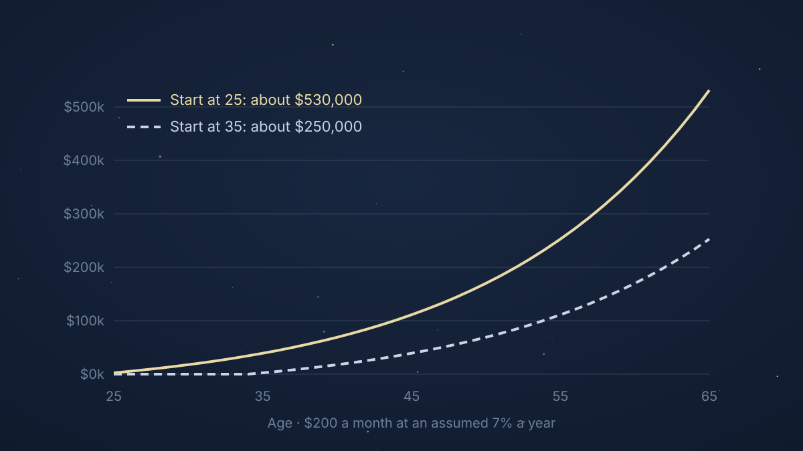

A World Built for Right Now
For most of your history, patience was forced on you. You planted in spring and ate in autumn. You saved grain for winter or you starved. The future was always close enough to touch.
Modern America has engineered that discipline away. Food arrives at the door within the hour. Entertainment streams without end. "Buy now, pay later" lets you own a thing before you can afford it. Your phones are designed by brilliant people to deliver one more small reward, and then another.
The companies that build these things are not villains. They are simply very good at selling the present. But each of them is betting against your future self, the one who will want the savings, the health, the skill, and the relationships that only patience builds. In a world that pays you to grab, the ability to wait has become rare, and therefore valuable.
The Marshmallow, Revisited
You may know the story. In the 1960s, psychologist Walter Mischel created what became known as the "marshmallow test": a child could eat one treat now, or wait and get two (Association for Psychological Science). Follow-up studies of those children, all from the Stanford University community, linked longer waiting to later achievement (Medical Xpress). It became a parable: willpower at four predicts success for life.
The part most retellings omit is a preview of Chapter 9. In 2018, researchers Tyler Watts, Greg Duncan, and Haonan Quan repeated the test with about 900 children, a far larger and more representative group. The link between waiting and later achievement was only half as large as in the original studies, and it shrank by about two-thirds once they accounted for family background, early thinking skills, and home environment (Watts et al., Psychological Science).
Was the original wrong? Not exactly. Other researchers argued that a child's ability to wait is itself shaped by a stable home, and that the new findings amount to a partial replication (Doebel et al.). Another team analyzing the same data found the test's predictions were better explained by social support than by self-control, and noted that children and adults alike are less willing to wait when dealing with someone they don't trust (Psychological Science, via PMC).
The honest lesson is not that some children are born with willpower. It is that patience is learned, and grows best where the future can be trusted. That is good news: it can be built at any age.
Why It Pays Over a Lifetime
The best long-term evidence comes from New Zealand. In the Dunedin study, researchers led by Terrie Moffitt and Avshalom Caspi followed 1,000 children from birth to age 32. Childhood self-control predicted adult physical health, substance dependence, personal finances, and criminal offending, along a gradient, and those effects could be separated from intelligence and social class. In a second group of 500 sibling pairs, the sibling with lower self-control had poorer outcomes despite a shared family background (Moffitt et al., PNAS).
Patience pays because its rewards compound. Suppose you set aside $200 a month and it earns 7% a year. That rate is an assumption for illustration; no investment guarantees it.
| Start saving at | Years invested | Total put in | Approximate value at 65 |
|---|---|---|---|
| 25 | 40 | $96,000 | $530,000 |
| 35 | 30 | $72,000 | $250,000 |

Waiting ten years to start costs $24,000 in contributions but roughly $280,000 in final wealth. The early saver does not work harder. Time does the heavy lifting.
The same arithmetic governs much of life. Every book you read makes the next easier to understand. Every hour of practice makes the next more productive. Every kept promise makes the next one more trusted.
Training the Superpower
Willpower is overrated. The most patient humans usually arrange their lives so they don't need much of it.
- Automate the good choice. Have savings leave your paycheck before you see it.
- Put distance between you and the temptation. Keep the phone in another room. Don't stock the snacks.
- Make the future vivid. Write down what the patient choice buys you.
- Start small and keep your promises to yourself. Each kept commitment teaches your brain that waiting pays.
- Model it for the young. Children learn patience from adults whose word can be trusted.
Look back over this book and you will find delayed gratification beneath every chapter. Choosing respect over contempt gives up the quick pleasure of feeling superior. Thinking for yourself is slower than letting the machine do it. Changing your mind trades the comfort of being right for the lasting benefit of becoming right.
Nearly everything worth having lies on the far side of a short discomfort. Your world will keep offering you the marshmallow. The superpower is to smile, say "not yet," and wait for two.
Sources
- Association for Psychological Science, "A New Approach to the Marshmallow Test Yields Complicated Findings"
- Medical Xpress, "Researchers replicate famous marshmallow test" (2018)
- Watts, Duncan & Quan, "Revisiting the Marshmallow Test," Psychological Science (2018)
- Doebel, Michaelson & Munakata, "Good Things Come to Those Who Wait" (commentary)
- Psychological Science, marshmallow test reanalysis (via PMC)
- Moffitt et al., "A gradient of childhood self-control predicts health, wealth, and public safety," PNAS (2011)